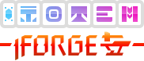

 Totem Forge GW2 Reffect Pack Creator
Craft your own pack that allows you to reorder and "pin" important effects for your particular build.
NOTE: packs created here rely on a set of custom images that are not included with the generated pack file! Make sure you have downloaded and installed the base Totem ZIP file which contains all the required images.
Instructions
Quick Start
- If you have not done so previously, download and install the main Totem pack ZIP file
- Click on some items under Available Effects to include in your totem
- Reorder your included effects as needed, moving them above the "Pin" marker to dilineate between pinned and unpinned effects
- Click "Download File" to save the JSON file, or alternatively copy the "Generated Pack" JSON text and and paste into a file in your packs folder (useful for updates).
- Selected effects, name and layout direction are also saved to the URL, which you can bookmark or share and come back to later to continue editing.
Available Effects
Click on an available effect to include it in your totem, click again to remove it. Effects may be filtered by category or searched by name.
Some effects are represented by more than one ID in-game. For those effects, the full set of IDs can be seen by hovering over the "main" ID number.
Included Effects
Included effects are divided up into two presentations:
- Pinned - these effects are permanently visible in a fixed location, and have a special graphic when maximum stacks are reached (for effects that stack in intensity)
- Unpinned - these effects are placed in a dynamic list and will only show up if the effect is present, while still preserving order
These two categories allow you to order effects by how important they are to you, as well as pin the most important for maximum readability.
Individual effects may be reordered by clicking and dragging on the handle to the left of the effect icon. You can also select multiple effects and use the buttons above the list to move them all at once, or delete them from the included effects list.
Pack Options
- Pack Name - the name for your totem
- Layout Direction - this is the direction that your totem will extend as more effects are included
Feedback
As there is no effect endpoint in the official GW2 API, I had to create my own list. If there are inconsistencies you can feel free to leave feedback or PRs in GitHub.